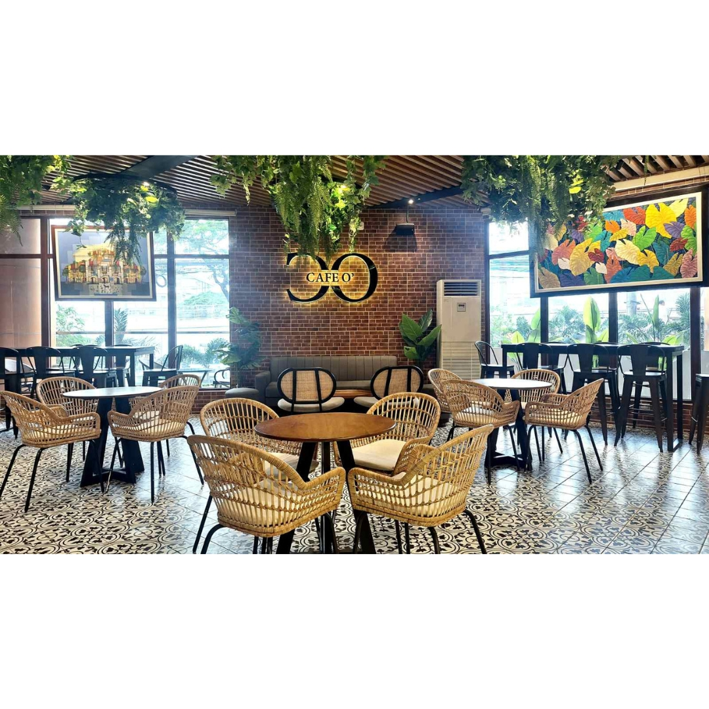

Our Story
Cafe O' started with a simple goal: to represent local coffee culture in the Philippines. Founded in 2020 by a group of coffee enthusiasts, we set out to create a space where premium, locally-sourced coffee could be enjoyed in a welcoming atmosphere. Our journey began in a small corner of Manila, where we roasted our first beans and served our first cup. Today, we're proud to have grown into a beloved spot for coffee lovers across the city, always staying true to our roots and commitment to quality.
Mission
To provide high-quality, accessible coffee for everyone. We are dedicated to sourcing the finest local beans, roasting them with care, and serving them in an inclusive environment where every cup tells a story of Filipino craftsmanship and community.
Vision
To be the leading local coffee brand known for aesthetic and quality. We envision a future where Cafe O' is synonymous with exceptional coffee experiences, inspiring a new generation of coffee lovers and setting the standard for local roasteries in the Philippines.